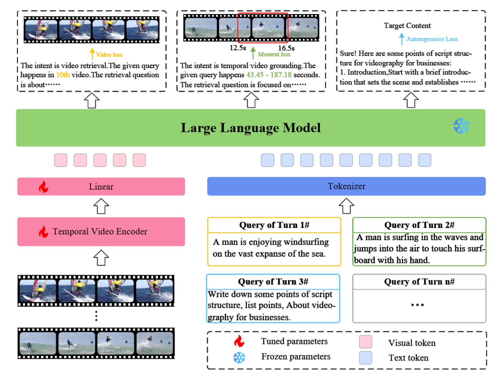

IVCR-200K: A Large-Scale Multi-turn Dialogue Benchmark for Interactive Video Corpus Retrieval


Abstract
Surveillance videos are an essential component of daily life with various critical applications, particularly in public security. However, current surveillance video tasks mainly focus on classifying and localizing anomalous events. Existing methods are limited to detecting and classifying the predefined events with unsatisfactory semantic understanding, although they have obtained considerable performance. To address this issue, we propose a new research direction of surveillance video-and-language understanding, and construct the first multimodal surveillance video dataset. We manually annotate the real-world surveillance dataset UCF-Crime with fine-grained event content and timing. Our newly annotated dataset, UCA UCF-Crime Annotation), contains 23,542 sentences, with an average length of 20 words, and its annotated videos are as long as 110.7 hours. Furthermore, we benchmark SOTA models for four multimodal tasks on this newly created dataset, which serve as new baselines for surveillance video-and-language understanding. Through our experiments, we find that mainstream models used in previously publicly available datasets perform poorly on surveillance video, which demonstrates the new challenges in surveillance video-and-language understanding. To validate the effectiveness of our UCA, we conducted experiments on multimodal anomaly detection. The results demonstrate that our multimodal surveillance learning can improve the performance of conventional anomaly detection tasks. All the experiments highlight the necessity of constructing this dataset to advance surveillance AI.
Interactive Video Corpus Retrieval Dataset
To implement an interactive video retrieval system, we constructed a multi-turn, conversational dataset comprising 193,434 interactions sourced from 5 video repositories. This dataset encompasses functionalities such as video retrieval, video moment retrieval, and natural dialogue.
Illustrated in Figure3, we devised a comprehensive collection pipeline:
- 1) Video Source Curation: Initially, we selected video datasets spanning diverse domains such as daily activities, movies, and kitchens, including selections like Charades-STA, to ensure video source diversity (as shown in the Figure7). Subsequently, we filtered out select videos from these 5 original datasets. Videos featuring isolated actions or events, severe occlusion, or excessively accelerated playback were excluded. Ultimately, 12,516 videos were chosen for inclusion. The average video length is 67.26 seconds.
- 2) Query refinement: Despite the presence of captions or descriptions with the filtered source videos, they often inadequately align with user queries in real-world scenarios. Hence, we employed GPT-4 for query refinement on captions.
- 3) Multi-turn dialogues: We established various dialogue dynamics, encompassing Long2Short,
Short2Long, Long2Long, Short2Short, and Natural Dialogue scenarios. “Long2Short” denotes
a user’s inclination to pinpoint video clips further in the current round, while “Natural Dialogue”
reflects users perceiving our system as a standard chat robot.
 Notably, while most dialogues consist of concatenated single-round exchanges, we also gathered a
limited number of multi-turn dialogues from actual users.
Notably, while most dialogues consist of concatenated single-round exchanges, we also gathered a
limited number of multi-turn dialogues from actual users. - Interpretability: To bolster the interpretability of interactive retrieval systems, we utilized GPT-4 to craft responses, encompassing intent understanding, retrieval or localization results, and reasons.
- Bilingual capability: To broaden the reach of this dataset, we employed a translation model to render the dataset into Chinese.
Notably, every output produced by GPT-4 will undergo meticulous scrutiny and refinement by 10 human experts to guarantee the precision of knowledge. Ultimately, we acquired a multi-turn, con- versational dataset comprising 200K volumes, named IVCR-200K. Additionally, we implemented a validation process conducted by a review team, focusing on the quality and consistency of annotations provided by different annotators. After all annotations (193,434 sentence-level queries) were com- pleted, the reviewers further examined the annotated data. The entire annotation and review process took approximately four months. A detailed description of the annotation procedure is provided in the appendix.
Dataset Collection and Annotation
To ensure the quality of the contributed dataset, we comprehensively analyze our IVCR-200K from property quality, diversity quality, and visualization quality.
Property Quality. The statistical analysis of textual description in our IVCR-200K dataset is shown in Figure4 and Figure5. In Figure4, we present the lengths of questions and answers in IVCR-200K. The average lengths of questions and answers in IVCR-200K are 24.5 words and 124.2 words, respectively. In contrast, the average question length in AVSD( 9 ) is 7.9 words, and the average answer length is 9.4 words. This indicates that the conversations in our dataset are more verbose and conversational. Additionally, Figure5 shows the distribution of the number of turns in our multi-turn conversations. The total number of conversation turns is 302,074. The average number of turns is approximately 2.6, which aligns with typical user retrieval behavior.
Diversity Quality. To assess the diversity of sentences in the IVCR-200K datasets, we conduct a word frequency analysis of nouns, verbs, and conjunctions.
Visualization Quality. We also check some cases as shown in the Figure X. More examples are available in the supplementary.
